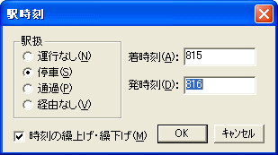

列車の駅時刻を設定できます。

[駅扱]
その駅での扱いを指定してください。
| [運行なし] | 列車は、この駅では運行されません。始発駅の前、終着駅の後は、この属性になります。 |
| [停車] | 列車は、この駅に停車します。 |
| [通過] | 列車は、この駅を通過します（運転停車は、[通過]に含めます）。 |
| [経由なし] | 列車は、この駅では運行されません。[運行なし]と同じですが、時刻表での表示は『他線経由』を示す "||" となります。 |
[時刻の繰上げ・繰下げ]
駅時刻を修正した場合の動作の指定です。駅時刻が空のところに入力を行う場合には、この選択には効果がありません。
[着時刻]
その駅での着時刻を指定してください。時刻の書式は、２４時間制で、"000"〜"2359" の範囲です。
[発時刻]
その駅での発時刻を指定してください。時刻の書式は、２４時間制で、"000"〜"2359" の範囲です。
１． [着時刻]・[発時刻]は、[駅扱]によって、入力する必要があるかないかが変わります。
[着時刻]か[発時刻] へ時刻を入力すると、駅扱は自動的に[停車]に変わります。
※ [駅扱]が[停車]に変わるのは、時刻入力後にフォーカスが移動したときか、 [OK] ボタンを押したときです。
ただし、[駅扱]を[運行なし]以外から[運行なし]に切り替えた場合は、 [着時刻]・[発時刻] への時刻入力はできません。
[着時刻] ・ [発時刻] の両方を指定することができます。
[着時刻] ・[発時刻]のうち、一方を『指定なし』(空欄)にすることもできます。
着時刻は分からず、発時刻だけが分かっている場合は、 [着時刻] は空欄にしたまま [発時刻] のみを入力してください。
※ [着時刻]・[発時刻]両方を『指定なし』にすることもできますが、この場合はダイヤグラムが正しく描画されません。
[着時刻] ・ [発時刻] どちらも、時刻の入力は任意です。
通過駅では、通常は、 [着時刻] ・ [発時刻] どちらも入力する必要はありません。
運転停車を行う駅では、[駅扱] を [通過] にしたうえで、 [着時刻] ・ [発時刻] を入力してください。
また、通過駅に [発時刻] だけを入力することにより、ダイヤグラム上の列車線（スジ）を微調整することができます。
[着時刻]・[発時刻] への入力はできません。
２． [時刻の繰上げ・繰下げ]がONの場合、[駅時刻]ダイアログの [着時刻] ・ [発時刻] 両方のエディットボックスに時刻が設定されている状態で、
[着時刻] に設定されている時刻を変更すると、 [発時刻] に設定されている時刻は [着時刻] の変更に合わせて自動で繰上げ／繰下げになります。
※ [発時刻] が変わるのは、フォーカスが [着時刻] テキストボックス以外（[発時刻]など）に移動したときか、
[OK] ボタンを押したときです。
３． [着時刻]・[発時刻] エディットボックスには、時刻の時と分を "000" 〜 "2359" の形式で入力するのが原則です。しかし、時を省略して分だけを入力することもできます。 OuDia はこの場合、前の駅の時刻をもとに、時を補完します。
※ 分のみを入力する場合は、"00" 〜 "59" の形式で、数字を２桁で入力してください。０分から９分までの場合も、十の位に "0" を添えた "00" 〜 "09" の形式で入力しないと、時の補完の機能は働きません。
※ 始発駅の駅時刻に対しては、時の補完ができないため、この機能は働きません。
※ 補完が行われるのは、 フォーカスがダイアログの他のコントロールに移動したときか、 [OK] ボタンを押したときです。